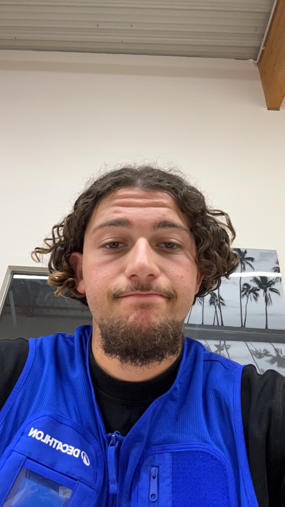
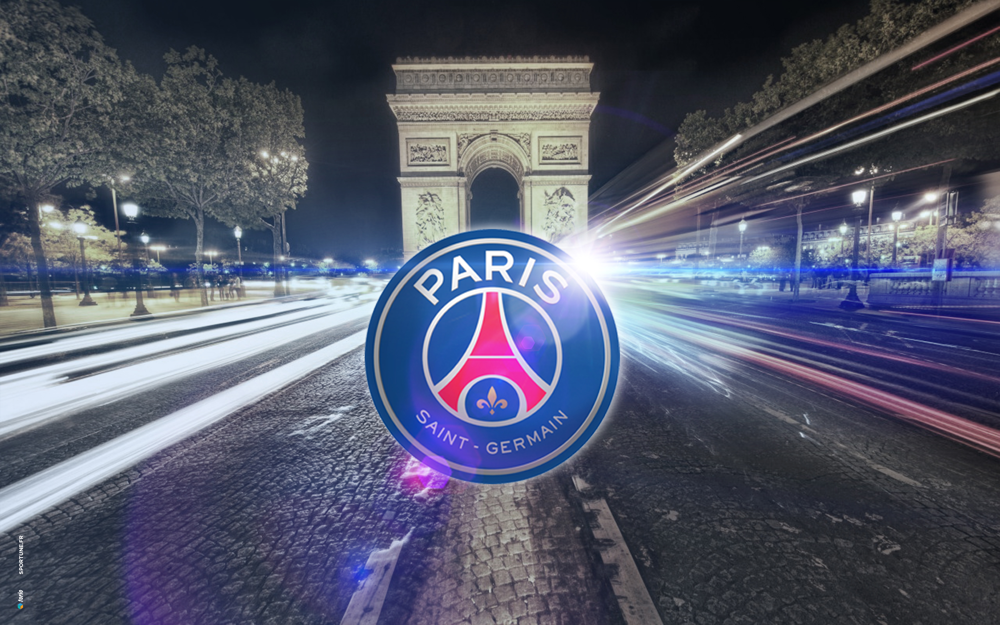

Enzo Gedeon
Âge : 20 ans | Passionné de sport et de football
Formation
- Actuellement : 3ᵉ année de Licence en Marketing du Sport à l’ILEPS.
- Alternance : Conseiller au rayon running chez Decathlon Herblay, intégré dans une équipe motivée et passionnée.
Expériences Professionnelles
- Coach de football :
- U15 féminines et U16 au club de Bouffémont.
- Ancien coach des U16 à l’USMBM.
- Formation et encadrement d’équipes jeunes, des catégories baby foot à U18.
- Joueur de football :
- Joueur senior au club de Bouffémont depuis 3 ans.
- Parcours dans divers clubs du Val d’Oise : Domont FC, Écouen FC, Saint-Brice FC.
- Stage en communication et événementiel :
- US Créteil Lusitanos Football (club évoluant en National).
- US Créteil Handball (club de première division française).
- Arbitre officiel : Ancien arbitre de football.
Compétences
- Gestion de projet : Expérience en organisation et gestion d’événements sportifs.
- Marketing sportif : Connaissance approfondie des stratégies marketing liées au sport.
- Coaching et encadrement : Formation des jeunes et analyse tactique du football.
- Expertise produits : Maîtrise des équipements de running et des besoins des sportifs.
Centres d’intérêt
- Fan de football : Grand supporter du PSG depuis mon enfance, en espérant toujours une Ligue des Champions !
- Compétitions sportives : Analyse tactique et passion pour le suivi des grandes rencontres sportives.

Réflexion sur l’avenir
Je suis en pleine réflexion quant à mon orientation future :
- Suivre des formations pour devenir coach professionnel.
- Continuer mes études pour me spécialiser dans la communication.
- M'orienter vers un master en journalisme sportif.
Contact